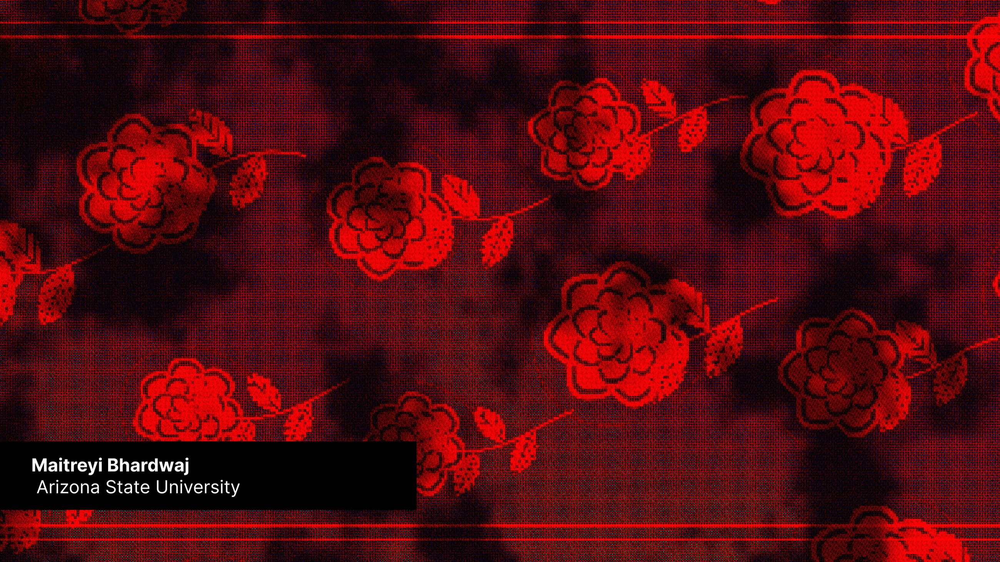

Featured at ARTECHOUSE NYC
A motion piece where delicate lace turns into an afterimage, made with Figma Agents and Figma Motion for Figma FigBuild.
I wanted to explore how delicate lace textures could transform into afterimages: the ghost of a pattern your eye keeps seeing after it has gone.
What I love about these tools is how quickly I can go from a passing thought to an actual experiment, playing with textures, motion and visual effects to see where an idea takes me.
With Figma Agents I built a custom shader that draws floral filet lace: roses and leaves stitched into a fine mesh, with cloudy textile highlights and grain.
Then I animated it in Figma Motion on a 15-second loop. The roses shrink, bloom and grow, the mesh tightens, and the colours almost fully invert. A small fixation point sits in the centre: hold your gaze on it, and the lace stays with you as an afterimage.
Rose motifs, a fine mesh, thread thickness and soft edges, all set by the shader.
Flower size, growth, spacing and mesh size are keyframed across the loop.
Inverted colour and a fixation point turn the pattern into something your eye keeps after it goes.
The piece was featured at ARTECHOUSE NYC for Figma FigBuild. Seeing it there was surreal.
I also got to meet fellow designers like Debodyuti Biswas and Tatiana Jimenez. Thank you to Miggi from Figgi for guiding us, and to Joanna Chen for bringing us all together.